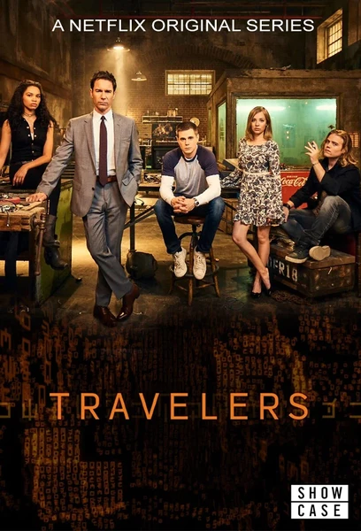

Сериал · 2016 · Фантастика
Путешественники из будущего заселяют тела людей нашего времени, чтобы предотвратить катастрофу — втайне выполняя миссию, которую нельзя выдавать. Сериал о времени, судьбе и людях как носителях кода.
Travelers from the future take over present-day bodies to prevent a catastrophe, hiding their mission from everyone. A series about time, fate and people as carriers of code.
← Вернуться в каталог IT Movies